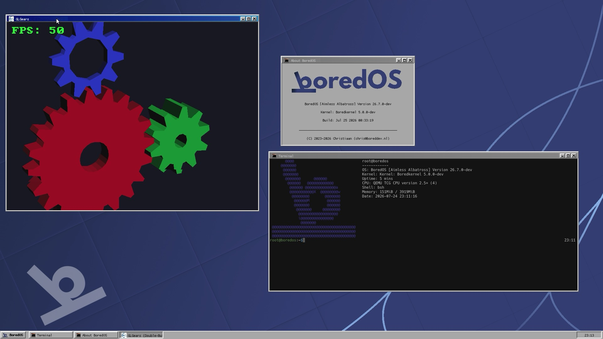

Hey, I'm Christiaan.
I'm a high school student developer from the Netherlands. I love coding in my free time. My glorychild is BoredOS, an operating system I've been building from scratch for years.
- GitHub@boreddevnl
- Emailchris@boreddev.nl
- DiscordMessage me

Recent commits
- Loading…
Latest posts
- Loading…